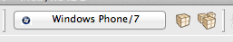
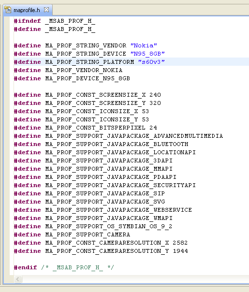

MoSync comes with a comprehensive set of device profiles to help you deploy your applications to the widest possible range of mobile devices. Each device profile defines the characteristics and capabilities of a single mobile device. Device profiles are used by MoSync's MoRE emulator and during the build process to dynamically tailor the application to a particular device.
From MoSync 3.0 we have introduced a powerful new paradigm for creating cross-platform packages. Now you build your projects for target platforms (like Android, iOS, and Windows Phone 7), rather than for specific devices.
This makes it much simpler to create your final packages and dramatically reduces the number of packages you need to distribute. Furthermore, you can upgrade your old projects to the way of specifying platforms with two simple button clicks!
If you don't wish to upgrade your projects to 3.0, the older method of building packages for specific devices is still supported for pre-3.0 projects; see further below.
MoSync comes with a comprehensive set of device profiles to help you deploy your applications to the widest possible range of mobile devices.
A device profile is categorized by its platform, for example “Android” or “BlackBerry”, and it’s variant, for example “iPad” or “iPhone” for iOS devices, or “Donut (1.6)” or “Eclair (2.3)” for Android devices. A profile is uniquely identified by its family and variant name.
MoSync tries to minimize the number of packages to build. If it cannot build for a certain device profile, or if there already is a package built for a certain platform profile, then that profile is filtered out and no specific package will be built. For example, JavaME does not support HTML5, so projects that require HTML5 capabilities will not be able to produce a package for JavaME. If a package can be used for several platform variants, only one package will be built (for example, many packages built for Android 1.x will work for Android 2.x, so there is no need to build a separate package for Android 2.x).
In the UI, only a minimal set of device profiles representing all device profiles are shown.
In the toolbar, click the profile selection button and select the current profile in the profile selection dialog that pops up.

Clicking the above button will produce this dialog:
In the profile selection dialog, click Select Capabilities and select the platforms and capabilities to build for. The “Must have” checkbox below each capability determines whether to build at all for platforms that do not have a certain capability.
An app that must have, say, NFC capabilities for the app to function properly, the “Must have” checkbox needs to be checked. On the other hand, if the NFC capabilities is just an optional or additional functionality in the app that is not necessary for its function, then the “Must have” checkbox can be unchecked. Then the developer of the app needs to make sure to check for availability of NFC functionality and properly handle the case when not available.
In the MoSync SDK 3.0, new projects are always platform based. To convert projects produced with MoSync versions prior to 3.0 or if a project uses device based profiles, either open profile selection dialog and click the Make Platform Based button, or right-click the project and select Properties > MoSync Project > Profile Database and enable platform based profiles.
If you do have a project which is currently configured per device, and you wish to move to a per platform configuration, then you can press the Filter Profiles for this project icon. An option will appear to convert your project and allow you to use platform finalization.
Some projects may need to be changed in order for them to build properly. In particular, any project that includes and uses symbols defined in the device-specific maprofile.h files need to be revised, since those files are not used by platform based projects. Instead, the “Additional GCC switches” found in the project’s build settings, will by default contain these symbols:
-DPLATFORM_%platform-family% -DVARIANT_%platform-variant%
where %platform-family% and %platform-variant% are the uppercased platform name and variant, respectively.
The available %platform-family% values are as of version 3.0:
SYMBIAN
These symbols may not be automatically added/removed when converting from/to device based projects.
MoSync projects created prior to 3.0 uses device based profiles instead of platform based profiles. (To convert a project to use device based profiles, right-click the project and select Properties > MoSync Project > Profile Database and enable device based profiles.)
MoSync comes with hundreds of device profiles, categorized by vendor. Each device profile holds important information about the characteristics of target mobile device, including information such as:
The available device profiles are shown on the Device Profiles tab in the IDE:
When you start a new project, the active device profile is always the profile for the MoSync emulator. (You can find this profile in the Device Profile view under Mobile Sorcery > Emulator.)
The current device profile is highlighted with an orange background to its icon.
To change the current device profile, right-click on the name of a device in the Device Profile view and select Set Target Phone.

If you want to see more information about a particular device, select Show Profile Info from the right-click menu. You will then see the header file that MoSync will use when it builds the application for the emulator:

You can filter the list of device profiles so that only a subset of the full device profile list is shown in the Device Profiles view so that, when you build your application, packages will only be built for the devices listed.
You can set more than one filter: setting the right combination of filters enables you to build only for the devices that meet the exact requirements of your application.
To set a filter, click the Add button beneath the Device Profiles view. The Select Filter Type window will open:
The first option is Vendor/Device. Here it's possible to choose which vendors and devices you want to include or exclude from your profiles. Use the checkboxes to select the combination of vendors and devices you require.
The second option is Feature/Bug. Here it's possible to include and exclude devices according to the features and bugs that we know exist on the various devices. It's also possible to select device operating systems through this option:
The third option is Device Constant Condition. These are constant values set in all devices. They include the screen sizes and the available heap sizes of the various devices:
By using multiple filters you can select the devices that satisfy the requirements for your application. Mutliple filters are combined using the AND operator: a device is listed only if it satisfies the conditions of all filters.
To remove or edit a currently applied filter, highlight the filter beneath the Device Profiles view, then click Remove or Edit.
To access device profile definitions in your C/C++ code, include the maprofile header file:
#include <maprofile.h>
Useful profile definitions include MA_PROF_STRING_VENDOR and MA_PROF_STRING_DEVICE, which are the names of the device and its vendor.
For writing vendor-specific or device-specific code, MA_PROF_VENDOR_* and MA_PROF_DEVICE_* definitions are also available. For example MA_PROF_VENDOR_NOKIA and MA_PROF_DEVICE_6630.
MA_PROF_SUPPORT_JAVAPACKAGE_BLUETOOTH is defined if and only if the device supports Bluetooth.
MA_PROF_CONST_SCREENSIZE_X, MA_PROF_CONST_SCREENSIZE_Y are defined as integers that describe the screen size in pixels. MA_PROF_CONST_BITSPERPIXEL describes the color depth.
If you close the Device Profiles view you can reopen it again by selecting Window > Show View > Other > MoSync > Device Profiles.